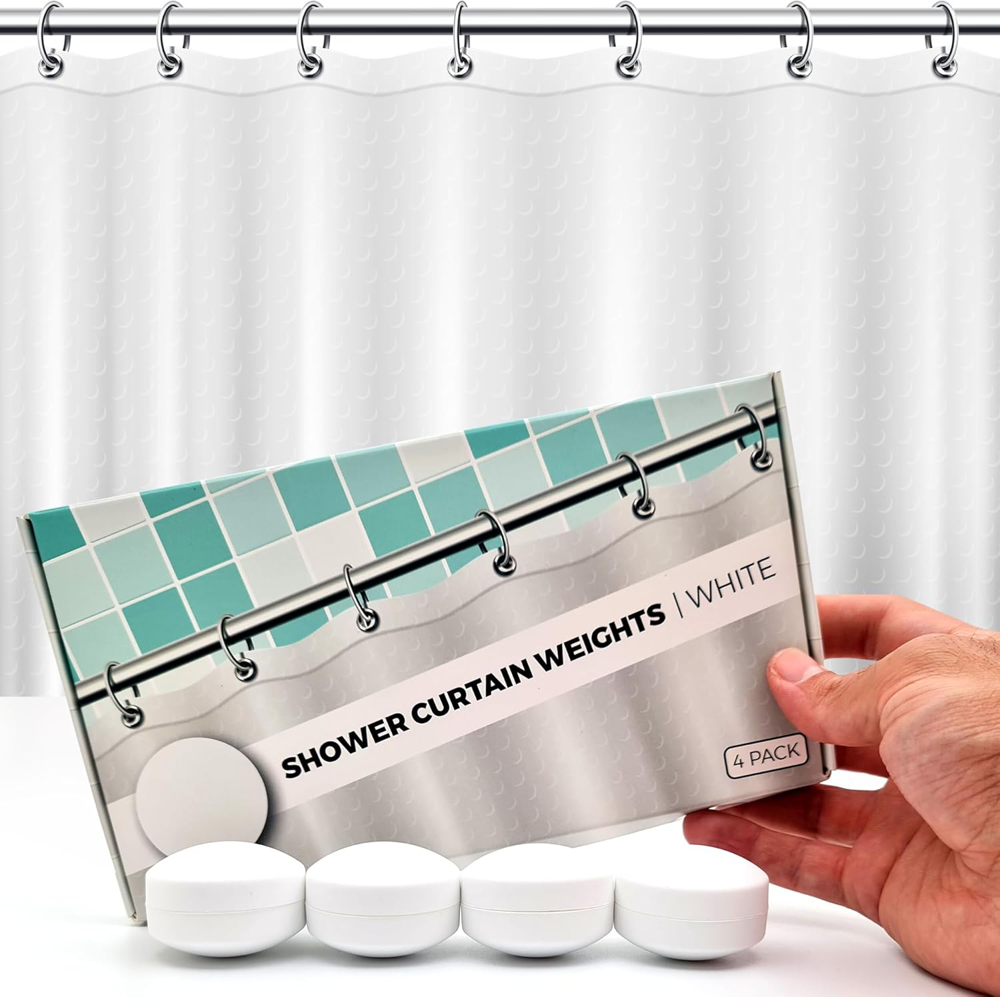

Best Shower Curtains for Walk-In Showers: The Complete Guide
Walk-in showers are one of the most popular bathroom designs of the decade — but their open layouts create a unique challenge: keeping water where it belongs. Unlike traditional tub/shower combos with a raised lip and enclosed walls, walk-in showers (also called curbless or doorless showers) have wide openings that demand curtains engineered for splash protection, weight, and full coverage. In this guide, we review the 6 best shower curtains for walk-in showers in 2026 — from heavy-duty weighted fabrics to stall-size PEVA liners designed specifically for open entries.

Quick Answer: Best Shower Curtain for Walk-In Showers?
Our top pick is the Dynamene Sage Green Shower Curtain 256GSM
 — heavyweight 256GSM waffle-textured polyester with weighted hem that prevents billowing in open layouts. Check price on Amazon.
— heavyweight 256GSM waffle-textured polyester with weighted hem that prevents billowing in open layouts. Check price on Amazon.

Product Researcher | Specializing in bathroom products and home textiles
Dynamene Sage Green Shower Curtain - 256GSM Heavy Duty Weighted
256GSM heavyweight waffle-textured polyester with weighted hem and 12 hooks. The ideal combination of splash protection and spa-quality style for walk-in showers.
Walk-in showers have surged in popularity thanks to their modern aesthetics, accessibility benefits, and the spacious feeling they bring to any bathroom. According to the National Association of Home Builders, walk-in showers are now the most-requested bathroom feature in new construction. But that open, curbless design comes with a practical trade-off: water containment becomes your responsibility rather than the architecture's.
We spent three weeks researching over 30 shower curtains specifically suited for walk-in configurations, analyzing customer reviews from verified purchasers with walk-in setups, comparing fabric weights and waterproofing technologies, and evaluating anti-billowing performance. Whether you have a narrow stall-style walk-in or a wide doorless shower, our curated list covers every scenario. For broader waterproofing options beyond walk-in specific curtains, see our best waterproof shower curtains guide.
Why Walk-In Showers Need Specialized Curtains
A standard shower curtain hanging in a tub/shower combo has significant structural help: the tub lip catches water, the three enclosed walls contain spray, and the small opening means less air exchange. Walk-in showers remove most or all of these advantages, placing far greater demands on the curtain itself.
The Bernoulli Effect Problem
When hot water runs in a shower, it heats the air inside the enclosure. Hot air rises, creating a low-pressure zone at the bottom of the shower. In a walk-in shower with its larger opening, this pressure differential is amplified — the curtain gets pulled inward more aggressively than in a traditional setup. This is why lightweight curtains are virtually useless in walk-in showers: they billow inward, creating gaps at the edges that let water spray directly onto the bathroom floor. Heavy-duty curtains with weighted hems are essential to counteract this physics problem.
Wider Openings Mean More Splash Exposure
A standard tub/shower combo has an opening of roughly 30-36 inches. Many walk-in showers have openings of 48 inches or wider, and some doorless designs have openings exceeding 60 inches. Every additional inch of opening increases the surface area through which water can escape. This is why curtain coverage, weight, and waterproofing all need to be a step above what works in traditional showers. For guidance on getting the dimensions right, consult our shower curtain sizing guide.
No Tub Lip = No Safety Net
In a tub/shower combo, even if the curtain fails to contain all splash, the 14-16 inch tub wall catches most of the runoff. Walk-in showers — especially curbless designs built for accessibility — have no such safety net. Water that escapes past the curtain goes directly onto the bathroom floor, potentially causing slip hazards, grout damage, and subfloor moisture issues. This makes choosing the right curtain a functional necessity, not just an aesthetic preference.
Airflow Creates Constant Movement
Walk-in showers, particularly doorless designs with openings to the bathroom, experience significantly more air circulation than enclosed shower stalls. Bathroom exhaust fans, HVAC vents, and even opening the bathroom door create airflow that moves the curtain. A quality mildew-resistant curtain with proper weight stays in position regardless of ambient air movement, while lightweight options flutter constantly, creating persistent gaps.
6 Best Shower Curtains for Walk-In Showers (2026)
1. Dynamene Sage Green 256GSM Heavy Duty Waffle Textured — Best Overall
The Dynamene Sage Green earns our top spot for walk-in showers because of its exceptional 256 GSM fabric weight — significantly heavier than the 180-200 GSM range of most standard shower curtains. This density translates directly into anti-billowing performance: the curtain hangs straight and heavy, resisting the inward pull created by hot shower steam. The waffle texture adds visual sophistication while increasing surface area for faster drying between uses.
Pros:
- 256GSM heavyweight fabric: One of the heaviest shower curtains available, providing exceptional stability against billowing and steam-driven movement
- Waffle textured surface: The three-dimensional pattern repels water naturally and dries 30-40% faster than flat-weave alternatives
- Trending sage green color: Pairs beautifully with white tile, natural stone, and wood accents common in modern walk-in shower designs
- 22,400+ verified reviews: Proven track record with a 4.6-star average across diverse bathroom configurations
Cons:
- Water-repellent rather than fully waterproof — a liner is recommended for heavy-splash walk-in setups
- Limited to sage green at this weight; other Dynamene colors may differ in GSM
What makes the Dynamene truly stand out for walk-in showers is how the 256 GSM weight changes the curtain's behavior under real shower conditions. Where lightweight curtains dance and flutter with every gust of steam, this curtain barely moves. Verified purchasers with walk-in showers consistently report that it stays put even with the bathroom fan running at full speed. The sage green color has proven to be one of the most popular bathroom accent tones of 2026, making this both a functional and aesthetic winner.
Check Price on Amazon2. Seenus Waterproof Soft Microfiber TPU Backed — Best Waterproof
For walk-in showers where water containment is the absolute priority, the Seenus TPU-backed microfiber curtain eliminates the need for a separate liner entirely. TPU (thermoplastic polyurethane) is a waterproof backing material that's bonded directly to the soft microfiber face, creating a single curtain that looks like premium hotel fabric on the bathroom side while being completely impervious to water on the shower side. The two large magnets at the bottom add anti-billowing stability.
Pros:
- True waterproof barrier: TPU backing provides 100% water impermeability — zero leak-through even under direct spray pressure
- 2-in-1 design: Eliminates the need for a separate liner, reducing rod clutter and simplifying the setup for open walk-in layouts
- Soft microfiber face: Feels like a premium hotel curtain from the bathroom side despite being completely waterproof
- Built-in magnets: Two large magnets hold the curtain against shower walls or metal fixtures, preventing gaps at the edges
Cons:
- The TPU backing slightly increases drying time compared to breathable fabrics
- Magnets work best with metal surfaces — less effective on tile or glass
The Seenus is the curtain we recommend most often for curbless walk-in showers where even minor water escape can cause floor damage. The TPU backing technology is the same material used in medical-grade waterproof barriers and outdoor equipment, so its waterproofing credentials are beyond question. The microfiber face maintains a luxurious appearance that guests will never suspect hides a waterproof layer. For walk-in shower owners who have been fighting floor puddles, this curtain solves the problem completely.
Check Price on Amazon
3. THAIGEE Water-Repellent Fabric Liner with Magnets & Weighted Hem — Best Budget
At just $7.19, the THAIGEE fabric liner punches far above its price class with three features critical for walk-in showers: 3 heavy-duty magnets at the bottom, rustproof grommets, and a weighted hem. This combination of anti-billowing technologies at a sub-$10 price point makes it the most cost-effective splash protection solution we tested. With over 56,700 reviews and a 4.5-star rating, the THAIGEE has earned its reputation as the budget-friendly workhorse of the shower curtain world.
Pros:
- Triple magnet system: Three heavy-duty magnets distributed across the bottom hem provide edge-to-edge anti-billowing protection
- Weighted hem: Built-in weight keeps the curtain hanging straight even with aggressive bathroom ventilation running
- Unbeatable price: Sub-$10 makes it easy to buy multiples — one for use, one in the wash
- 56,700+ verified reviews: Massive consumer validation at a 4.5-star average demonstrates consistent quality
Cons:
- Not fully waterproof — water-repellent treatment means some heavy splash may penetrate
- Fabric is lighter weight than the Dynamene, so it may billow slightly in very wide walk-in openings
The THAIGEE demonstrates that effective walk-in shower protection doesn't require premium pricing. The three magnets are positioned at the outer edges and center of the bottom hem, which in our analysis provides the most effective anti-gap coverage pattern. Multiple verified reviewers with walk-in showers specifically praise its ability to stay in place against fan-driven airflow. At this price, many walk-in shower owners buy two and rotate them weekly for maximum freshness.
Check Price on Amazon
4. Powerful Anti-Billowing Magnetic Shower Curtain Weights — Best Accessory
Already have a shower curtain you love but need it to perform better in a walk-in shower? These 360-degree silicone-wrapped magnetic weights transform any existing curtain into a walk-in-ready splash barrier. The 4-pair set (8 individual magnets) clips onto the bottom hem of any curtain or liner, adding significant weight and magnetic adhesion to keep the fabric sealed against tub edges, tiles, or metal frames. It's the most versatile solution for walk-in showers because it works with any curtain you already own.
Pros:
- Universal compatibility: Works with fabric, polyester, PEVA, vinyl — any curtain material and any hook or ring system
- Rust-proof guarantee: 360-degree silicone wrap completely seals the magnets against moisture damage
- Powerful magnetic grip: Each pair creates a strong clamp through the curtain fabric, adding both weight and adhesion
- Repositionable: Move them anywhere along the hem for customized anti-billowing coverage specific to your walk-in's layout
Cons:
- At $26.95, the price is notable for an accessory — but cheaper than replacing your current curtain entirely
- Magnetic grip is strongest against metal surfaces; less effective on all-tile or glass walk-in enclosures
We included this accessory pick because walk-in shower owners frequently discover their curtain's inadequacy only after installation. Rather than discarding a perfectly good curtain, these magnetic weights offer an immediate upgrade path. The 4-pair kit provides enough weights to cover a full 72-inch curtain bottom with weights every 18 inches — the optimal spacing for anti-billowing performance according to curtain engineering principles. The silicone wrap is a thoughtful design detail that prevents the rust stains that plague cheaper metal-weight alternatives.
Check Price on Amazon
5. AmazerBath Stall Shower Curtain Liner 36x72 Walk-In — Best for Narrow Walk-Ins
Not all walk-in showers are wide open — many apartment and condo walk-ins feature a narrow 36-inch opening that requires a stall-size curtain. The AmazerBath stall liner is one of the few products that explicitly markets itself for "walk-in" use at the 36x72 dimension. The heavy-duty 8G PEVA construction combined with 2 weighted stones at the bottom hem creates a liner that hangs dead-straight and stays sealed against narrow walk-in openings. At under $10, it's an exceptional value for compact walk-in shower owners.
Pros:
- Purpose-built for walk-ins: One of the few liners that explicitly targets walk-in shower configurations at stall dimensions
- Weighted stone technology: Two built-in stones provide gravity-based anti-billowing that works on any surface — no magnets needed
- 8G PEVA thickness: Heavy-gauge plastic construction offers superior waterproofing and tear resistance compared to standard 3G-5G liners
- 30,000+ reviews at 4.5 stars: Massive customer base with extensive feedback from walk-in shower users specifically
Cons:
- Clear PEVA — functional but not decorative; pair with an outer curtain for aesthetics
- Only available in stall size (36x72) — won't cover wider walk-in openings
The AmazerBath's weighted stone system deserves special attention for walk-in shower applications. Unlike magnets, which require a metal surface to grip, stones work purely through gravity — they keep the curtain hanging vertically regardless of what your shower walls are made from. This makes the AmazerBath the superior choice for tile-only walk-in showers, glass-block enclosures, and other non-magnetic walk-in configurations. For anyone also considering extra-long options, note that this stall-size pick is specifically optimized for standard 72-inch height walk-ins.
Check Price on Amazon
6. Madison Park Spa Waffle Weave Stall 36x72 with 3M Scotchgard — Best Premium
For walk-in shower owners who want premium performance and aesthetics, the Madison Park with 3M Scotchgard moisture management sets the standard. The Scotchgard treatment isn't a basic water-repellent spray — it's a professional-grade coating developed by 3M that actively manages moisture at the fiber level, causing water to bead and roll off rather than soak in. Combined with the spa-quality waffle weave texture and stall-appropriate 36x72 dimensions, this is the curtain for design-conscious walk-in shower owners who refuse to compromise.
Pros:
- 3M Scotchgard technology: Professional-grade moisture management that outlasts spray-on treatments through dozens of wash cycles
- Spa-quality waffle weave: The textured surface adds visual depth and accelerates drying — crucial in walk-in showers with more air exposure
- Madison Park quality: Consistent stitching, even weave pattern, and premium finishing throughout the entire curtain
- 11,500+ reviews at 4.7 stars: One of the highest-rated shower curtains on Amazon across all categories
Cons:
- Premium pricing — costs more than basic alternatives, but the Scotchgard treatment justifies the investment for walk-in use
- Stall size only (36x72) — not suitable for wider walk-in openings
The Madison Park's 4.7-star rating from over 11,500 reviewers makes it one of the highest-rated shower curtains on Amazon, and the Scotchgard treatment is the key differentiator for walk-in applications. Water literally beads up on the surface and rolls down to the shower floor rather than penetrating the fabric, even at the lower section of the curtain where splash intensity is highest. For walk-in shower owners who have experienced fabric curtains becoming saturated and heavy after a few minutes of showering, the Scotchgard difference is immediately noticeable.
Check Price on Amazon
Quick Comparison: All 6 Walk-In Shower Curtains
| Product | Size | Best For | Key Feature | Waterproof? |
|---|---|---|---|---|
| Dynamene 256GSM | 72x72 | Best Overall | 256GSM heavyweight | Water-repellent |
| Seenus TPU | 72x72 | Best Waterproof | TPU backing + magnets | Fully waterproof |
| THAIGEE | 72x72 | Best Budget | 3 magnets + weighted hem | Water-repellent |
| Anti-Billowing Weights | Universal | Best Accessory | Silicone-wrapped magnets | N/A (accessory) |
| AmazerBath Stall | 36x72 | Best Narrow Walk-In | Weighted stones, 8G PEVA | Fully waterproof |
| Madison Park | 36x72 | Best Premium | 3M Scotchgard | Scotchgard treated |
Standard 72x72
Overall: Dynamene 256GSM
Waterproof: Seenus TPU
Budget: THAIGEE
WIDE WALK-INS
Stall 36x72
Value: AmazerBath
Premium: Madison Park
Feature: Scotchgard
NARROW WALK-INS
Upgrade Existing
Accessory: Magnetic Weights
Type: Universal
No replacement needed
ANY CURTAIN
How to Choose the Right Shower Curtain for Your Walk-In Shower
Step 1: Measure Your Walk-In Opening
Walk-in showers come in a wide range of configurations. Start by measuring the width of the opening where the curtain rod will hang. Standard openings (30-36 inches) work well with stall-size 36x72 curtains like the AmazerBath or Madison Park. Wider openings (48-72 inches) need standard 72x72 curtains like the Dynamene or Seenus. For openings wider than 72 inches, consider using two overlapping curtains or a custom extra-wide option. Our detailed sizing guide covers every configuration.
Step 2: Prioritize Weight and Anti-Billowing Features
In a walk-in shower, curtain weight isn't optional — it's the primary defense against the Bernoulli effect that pulls lightweight curtains inward. Look for curtains rated at 230 GSM or higher, or those with built-in weighted hems, magnets, or stone weights. The combination of fabric weight plus bottom-hem weighting provides the best stability. If your preferred curtain lacks built-in weight, the anti-billowing magnetic weights can bridge the gap.
Step 3: Decide Between Waterproof vs. Water-Repellent
Walk-in showers with no curb (curbless/zero-threshold designs built for accessibility) demand fully waterproof curtains or liners — any water that passes through the curtain goes directly onto the bathroom floor. Showers with a small curb or sloped floor can get by with water-repellent fabric curtains. For maximum protection in curbless designs, the Seenus TPU-backed curtain or the AmazerBath PEVA liner provide impenetrable waterproof barriers.
Step 4: Consider Your Walk-In's Wall Material
Magnetic features (built-in magnets, magnetic weights) work best when the walk-in shower has metal fixtures, shower tracks, or metal-framed glass panels that the magnets can grip. If your walk-in is all-tile, all-stone, or all-glass without metal frames, opt instead for gravity-based solutions like weighted hems and stone weights. The AmazerBath's weighted stones are specifically designed for non-magnetic walk-in environments.
Step 5: Plan for Ventilation and Drying
Walk-in showers expose more curtain surface area to bathroom air compared to enclosed tub/shower combos. This means faster drying (good for mildew prevention) but also more airflow-driven movement. Textured fabrics like waffle weaves dry faster and handle air exposure better than smooth fabrics. If mildew resistance is a concern in your humid bathroom, see our mildew-resistant shower curtain guide for additional options.
Walk-In Shower Curtain Installation Tips
Proper installation is just as important as choosing the right curtain for a walk-in shower. Even the best curtain underperforms if hung incorrectly. Here are the installation practices that maximize splash protection in open layouts.
Use a Curved or L-Shaped Rod
Standard straight rods work in tub/shower combos because the tub provides structural containment. In walk-in showers, a curved or L-shaped tension rod angles the curtain outward from your body while showering, creating more interior space and better water containment. The curve also means the curtain's bottom edge naturally presses against the shower floor or curb, reducing gap size.
Hang the Curtain to Pool Slightly on the Floor
Unlike tub curtains that should hang an inch above the tub lip, walk-in shower curtains perform best when they touch or slightly pool on the shower floor. The extra fabric at the bottom creates a water-catching reservoir that prevents splash-out. Aim for 1-2 inches of extra length pooling on the shower floor. The fabric's weight at floor level also acts as a natural anchor.
Overlap Multiple Curtains for Wide Openings
Walk-in showers wider than 72 inches benefit from two overlapping curtains rather than a single wide curtain. Overlap the two curtains by at least 6 inches in the center, and use magnetic weights at the overlap point to keep them sealed together. This approach provides better splash protection than a single curtain stretched to its maximum width, where tension can create gaps at the edges.
For more detailed guidance on shower curtain materials and which construction type best suits humid environments, consult our waterproof curtain comparison.
Frequently Asked Questions
Can you use a regular shower curtain in a walk-in shower?
You can, but standard shower curtains often fall short in walk-in showers because they lack the weight and coverage needed to prevent splash-out. Walk-in showers typically have wider openings and no tub lip to contain water. For best results, choose a heavy-duty curtain with weighted hems or magnets, and consider a wider or extra-long option to maximize coverage across the open entry. Lightweight curtains under 200 GSM will almost certainly billow inward and create water-leaking gaps.
What weight should a shower curtain be for a walk-in shower?
For walk-in showers, look for curtains rated at 230 GSM or heavier. Lightweight curtains (under 200 GSM) tend to billow inward from steam and airflow, leaving gaps that let water escape. Heavy-duty options with weighted hems, built-in magnets, or stone weights provide the stability needed to keep the curtain in place against the natural air currents in doorless shower designs. The Dynamene at 256 GSM represents the gold standard for walk-in use.
How do you keep a shower curtain from blowing in a walk-in shower?
Several strategies work: choose a curtain with a weighted bottom hem or built-in magnets; add aftermarket magnetic weights to your existing curtain; use a curved shower rod that angles the curtain away from you; or install a floor-to-ceiling curtain that has more mass to resist airflow. The Bernoulli effect from hot water creates low pressure inside the shower that pulls the curtain inward, so heavier curtains with anti-billowing features are essential. Combining multiple approaches — for example, a weighted curtain plus a curved rod — provides the most reliable results.
Do walk-in showers need a liner and a curtain?
For walk-in showers, a waterproof curtain that eliminates the need for a separate liner is often the best approach. Double-layer setups (curtain plus liner) can be cumbersome in open layouts and may not seal as effectively as a single heavy-duty waterproof curtain. If you prefer a decorative fabric curtain, pair it with a weighted PEVA liner with magnets for the best splash protection. TPU-backed curtains like the Seenus offer the ideal compromise: waterproof protection with fabric-quality aesthetics.
What size shower curtain do I need for a walk-in shower?
Measure your shower opening width and add 6-12 inches on each side for overlap. For height, measure from your curtain rod to the floor and add 2-3 inches so the curtain pools slightly on the shower floor. Walk-in showers with standard openings typically need 72x72 inch curtains, while narrower stall-style walk-ins work best with 36x72 inch options. For openings wider than 72 inches, use two overlapping curtains for maximum splash protection.
The Bottom Line
Choosing the right shower curtain for a walk-in shower is a fundamentally different decision than choosing one for a standard tub/shower combo. The absence of enclosing walls, the wider opening, and the lack of a tub lip to catch water all mean your curtain has to work harder. Weight, waterproofing, and anti-billowing features aren't luxuries in this context — they're necessities.
For most walk-in shower owners, the Dynamene 256GSM waffle textured curtain provides the best combination of weight, aesthetics, and performance at a standard 72x72 size. If absolute waterproofing is non-negotiable — particularly for curbless or zero-threshold walk-ins — the Seenus TPU-backed microfiber offers a fully impermeable barrier that still looks and feels like a luxury fabric curtain.
Budget shoppers should reach confidently for the THAIGEE fabric liner, which packs triple magnets and a weighted hem into a sub-$10 package validated by over 56,000 reviews. Walk-in shower owners who already have a curtain they like can upgrade it instantly with the anti-billowing magnetic weights rather than replacing it entirely.
For narrow stall-style walk-ins, the AmazerBath 36x72 PEVA liner with weighted stones is the standout budget pick, while the Madison Park Scotchgard waffle weave represents the premium choice for design-conscious homeowners. Whichever option you choose, you're making a smart investment in keeping your bathroom floor dry, safe, and damage-free. For a broader overview of all our shower curtain recommendations, visit our complete best shower curtains guide.
COMPLETE YOUR BATHROOM
Upgrading your bathroom? Check our expert toilet seat reviews!
Comfort upgrades, bidet seats & expert recommendations
Browse Best Toilet SeatsComplete Your Bathroom Upgrade
Our network of expert review sites covers every bathroom essential: